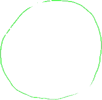
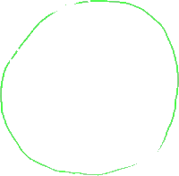

objects 0 - 1
line badness[0][1] = 0
t penalty = -0.0
x penalty = -41.0
y penalty = -0.0
objects 2 - 4
line badness[2][4] = 0
t penalty = -170.0
x penalty = -44.0
y penalty = -170.0
Right now, the prevailing theory of how the universe came about is commonly called the Big Bang theory.

objects 5 - 7
line badness[5][7] = 0
t penalty = -0.0
x penalty = -429.0
y penalty = -0.0
And really is just this idea that the universe started as kind of this infinitely small point, this infinitely small singularity. And then it just had a big bang or it just expanded from that state to the universe that we know right now.
objects 8 - 9
line badness[8][9] = 0
t penalty = -525.0
x penalty = -228.0
y penalty = -525.0

objects 10 - 11
line badness[10][11] = 0
t penalty = -100.0
x penalty = -3.0
y penalty = -100.0

objects 12 - 13
line badness[12][13] = 0
t penalty = -990.0
x penalty = -84.0
y penalty = -990.0
objects 14 - 16
line badness[14][16] = 0
t penalty = -85.0
x penalty = -33.0
y penalty = -85.0
And when I first imagined this-- and I think if it's also a byproduct of how it's named-- Big Bang, you kind of imagine this type of explosion, that everything was infinitely packed in together and then it exploded.
objects 17 - 19
line badness[17][19] = 0
t penalty = -240.0
x penalty = -61.0
y penalty = -240.0
And then it exploded outward.
objects 20 - 22
line badness[20][22] = 0
t penalty = -130.0
x penalty = -127.0
y penalty = -130.0
And then as all of the matter exploded outward, it started to condense.

objects 23 - 24
line badness[23][24] = 0
t penalty = -195.0
x penalty = -71.0
y penalty = -195.0
And then you have these little galaxies and super clusters of galaxies.


objects 25 - 26
line badness[25][26] = 0
t penalty = -415.0
x penalty = -111.0
y penalty = -415.0
And they started to condense.


objects 27 - 28
line badness[27][28] = 0
t penalty = -170.0
x penalty = -130.0
y penalty = -170.0
objects 29 - 30
line badness[29][30] = 0
t penalty = -385.0
x penalty = -86.0
y penalty = -385.0
And then within them, planets condensed and stars condensed. And then we have the type of universe that we have right now.

objects 31 - 33
line badness[31][33] = 0
t penalty = -945.0
x penalty = -93.0
y penalty = -945.0
But this model for visualizing the Big Bang has a couple of problems. One is when we talk about the Big Bang, we're not talking about the matter, just the mass or just the matter in the universe being in one point. We're talking about actual space expanding.


objects 34 - 35
line badness[34][35] = 0
t penalty = -420.0
x penalty = -126.0
y penalty = -420.0
So we're not just talking about something inside of space, like the physical mass, the physical matter expanding. We're talking about space itself. And so when you have this type of model, you have all of this stuff expanding.

objects 36 - 37
line badness[36][37] = 0
t penalty = -70.0
x penalty = -11.0
y penalty = -70.0
objects 38 - 39
line badness[38][39] = 0
t penalty = -440.0
x penalty = -84.0
y penalty = -440.0


objects 40 - 42
line badness[40][42] = 0
t penalty = -1010.0
x penalty = -148.0
y penalty = -1010.0


objects 43 - 44
line badness[43][44] = 0
t penalty = -850.0
x penalty = -48.0
y penalty = -850.0
objects 45 - 46
line badness[45][46] = 0
t penalty = -0.0
x penalty = -27.0
y penalty = -0.0
But you're like, whoa, look, isn't it expanding into something else? Maybe if the furthest out parts of this matter is right over here, what's this stuff over here? And so you say, well, wouldn't that be space? So how can you say space itself is expanding? And another idea that a Big Bang also implies is if this is the furthest stuff out there, would this be the edge of the universe? Does the universe have an edge? And the answer to either of those questions, and that's what we're going to try to tackle in this, is that, one, the universe does not have an edge. And two, there is no outside space. We are not expanding into another space.


objects 47 - 48
line badness[47][48] = 0
t penalty = -785.0
x penalty = -309.0
y penalty = -785.0
And I'm going to explain that. Hopefully, we'll see why that is the case right now. So the best way to view it-- and we're going to view it by analogy.


objects 49 - 50
line badness[49][50] = 0
t penalty = -0.0
x penalty = -12.0
y penalty = -0.0
objects 51 - 53
line badness[51][53] = 0
t penalty = -5.0
x penalty = -160.0
y penalty = -5.0
objects 54 - 55
line badness[54][55] = 0
t penalty = -0.0
x penalty = -7.0
y penalty = -0.0
objects 56 - 57
line badness[56][57] = 0
t penalty = -290.0
x penalty = -351.0
y penalty = -290.0
objects 58 - 59
line badness[58][59] = 0
t penalty = -0.0
x penalty = -2.0
y penalty = -0.0
objects 60 - 61
line badness[60][61] = 0
t penalty = -225.0
x penalty = -245.0
y penalty = -225.0
If I were tell you that I have a two-dimensional space that has a finite area, so it has a finite area-- so it's not infinite. And it also has no edge.
objects 62 - 63
line badness[62][63] = 0
t penalty = -0.0
x penalty = -13.0
y penalty = -0.0

objects 64 - 66
line badness[64][66] = 0
t penalty = -970.0
x penalty = -206.0
y penalty = -970.0
This once again, when you first look at it, seems difficult. How do I just construct something that has a finite area, but still has no edge? Every time I try to draw an area, it looks like I have to have some edges. And then you might remember, what if that two-dimensional space is curved, what happens? And I think the easiest example of that is the surface of a sphere. Let me draw a sphere over here.

objects 67 - 68
line badness[67][68] = 0
t penalty = -0.0
x penalty = -200.0
y penalty = -0.0
So this right here is a sphere.
objects 69 - 71
line badness[69][71] = 0
t penalty = -0.0
x penalty = -153.0
y penalty = -0.0
objects 72 - 74
line badness[72][74] = 0
t penalty = -105.0
x penalty = -186.0
y penalty = -105.0
Let me draw some longitude and latitudinal lines on this sphere.
objects 75 - 76
line badness[75][76] = 0
t penalty = -0.0
x penalty = -16.0
y penalty = -0.0
objects 77 - 79
line badness[77][79] = 0
t penalty = -560.0
x penalty = -66.0
y penalty = -560.0
On this sphere, all of a sudden-- and I'll shade it in a little bit, make it look nice-- this type of a sphere, you have a finite area. You could imagine the surface of a balloon, or the surface of a bubble, or the surface of the Earth. You have a finite area, but you have no edge.
objects 80 - 81
line badness[80][81] = 0
t penalty = -0.0
x penalty = -3.0
y penalty = -0.0
objects 82 - 83
line badness[82][83] = 0
t penalty = -140.0
x penalty = -90.0
y penalty = -140.0
objects 84 - 85
line badness[84][85] = 0
t penalty = -1310.0
x penalty = -443.0
y penalty = -1310.0
If you keep going forever in one direction, you're going to go all the way around and come back to the other side. Now, to imagine a three-dimensional space that has these same properties, a finite area and-- and I don't want to say finite area anymore, because we're not talking about a three-dimensional space. Let me draw it over here.
objects 86 - 87
line badness[86][87] = 0
t penalty = -0.0
x penalty = -10.0
y penalty = -0.0
objects 88 - 89
line badness[88][89] = 0
t penalty = -0.0
x penalty = -17.0
y penalty = -0.0

objects 90 - 91
line badness[90][91] = 0
t penalty = -20.0
x penalty = -156.0
y penalty = -20.0
So let's think about a three-dimensional space, so a three-dimensional space.

objects 92 - 93
line badness[92][93] = 0
t penalty = -350.0
x penalty = -327.0
y penalty = -350.0

objects 94 - 96
line badness[94][96] = 0
t penalty = -0.0
x penalty = -26.0
y penalty = -0.0
objects 97 - 99
line badness[97][99] = 0
t penalty = -270.0
x penalty = -251.0
y penalty = -270.0
objects 100 - 101
line badness[100][101] = 0
t penalty = -0.0
x penalty = -26.0
y penalty = -0.0
Instead of area, since we're in three dimensions now, I want to talk about a finite volume and no edge.
objects 102 - 104
line badness[102][104] = 0
t penalty = -580.0
x penalty = -164.0
y penalty = -580.0


objects 105 - 107
line badness[105][107] = 0
t penalty = -335.0
x penalty = -92.0
y penalty = -335.0
How do I do that? And when you think about it superficially, well, look, if I have a finite volume, maybe it'll be contained in some type of a cube. And then we clearly have edges in those situations. Or you could even think about a finite volume as being the inside of a sphere. And that clearly has an edge, this entire surface over there. So how do you construct a three-dimensional space that has a finite volume and no edge? And that I'm going to tell you right now, it's very hard for us to visualize it. But in order to visualize it, I'm essentially going to draw the same thing as I drew right here.
 

objects 108 - 110
line badness[108][110] = 0
t penalty = -40.0
x penalty = -729.0
y penalty = -40.0
What you have to imagine, and you almost have to imagine it by analogy, unless you have some type of a profound brain wired for more than three spatial dimensions, is a sphere.

objects 111 - 112
line badness[111][112] = 0
t penalty = -195.0
x penalty = -10.0
y penalty = -195.0
So let me make it clear.
objects 113 - 114
line badness[113][114] = 0
t penalty = -0.0
x penalty = -10.0
y penalty = -0.0
objects 115 - 116
line badness[115][116] = 0
t penalty = -0.0
x penalty = -6.0
y penalty = -0.0
objects 117 - 118
line badness[117][118] = 0
t penalty = -40.0
x penalty = -136.0
y penalty = -40.0
This is a two-dimensional surface.
objects 119 - 121
line badness[119][121] = 0
t penalty = -515.0
x penalty = -324.0
y penalty = -515.0
On the surface of the sphere, you can only move into directions, two perpendicular directions.

objects 122 - 124
line badness[122][124] = 0
t penalty = -0.0
x penalty = -39.0
y penalty = -0.0
You could move like that or you could move like that. You could move left and right or you could move up and down.
objects 125 - 126
line badness[125][126] = 0
t penalty = -920.0
x penalty = -31.0
y penalty = -920.0
objects 127 - 128
line badness[127][128] = 0
t penalty = -0.0
x penalty = -34.0
y penalty = -0.0
objects 129 - 130
line badness[129][130] = 0
t penalty = -0.0
x penalty = -35.0
y penalty = -0.0
So it's a two-dimensional surface of a three-dimensional sphere.

objects 131 - 133
line badness[131][133] = 0
t penalty = -215.0
x penalty = -166.0
y penalty = -215.0
objects 134 - 135
line badness[134][135] = 0
t penalty = -0.0
x penalty = -9.0
y penalty = -0.0
So if we take it by analogy, let's imagine, and it's hard to imagine, a three-dimensional surface.

objects 136 - 137
line badness[136][137] = 0
t penalty = -0.0
x penalty = -131.0
y penalty = -0.0
And you can do it mathematically.
objects 138 - 140
line badness[138][140] = 0
t penalty = -230.0
x penalty = -358.0
y penalty = -230.0
The math here is actually not that difficult.

objects 141 - 142
line badness[141][142] = 0
t penalty = -0.0
x penalty = -21.0
y penalty = -0.0
objects 143 - 145
line badness[143][145] = 0
t penalty = -0.0
x penalty = -10.0
y penalty = -0.0
It's a three-dimensional surface of a four-dimensional sphere.
objects 146 - 147
line badness[146][147] = 0
t penalty = -345.0
x penalty = -119.0
y penalty = -345.0
And I'm going to draw it the same way.


objects 148 - 149
line badness[148][149] = 0
t penalty = -715.0
x penalty = -19.0
y penalty = -715.0
So if we kind of view those three dimensions are just these two dimensions of the surface, the same thing. It's the same thing.
objects 150 - 151
line badness[150][151] = 0
t penalty = -0.0
x penalty = -156.0
y penalty = -0.0
And if you imagine that-- I'm not saying that this is actually the shape of the universe. We don't know the actual shape. But we do know that it does have a slight curvature.
objects 152 - 153
line badness[152][153] = 0
t penalty = -975.0
x penalty = -120.0
y penalty = -975.0
We don't know the actual shape, but a sphere is the simplest. There's other ones we could do. A toroid would also fit the bill of having a finite volume with no edge. And another thing, I want to make it clear, we actually don't even know whether it has just a finite volume. That's still an open question. But what I want to do is show you that it can have a finite volume and also have no edge. And most people believe-- and I want to say \ here because we can just go based on evidence and all that-- that we are talking about something with a finite volume, especially when you talk about the Big Bang theory.

objects 154 - 155
line badness[154][155] = 0
t penalty = -650.0
x penalty = -22.0
y penalty = -650.0
That kind of, on some dimension, implies a finite volume, although it could be a super large, unfathomably large volume, it is finite. Now, if you have this, let's imagine this sphere. Let's imagine this sphere.
objects 156 - 157
line badness[156][157] = 0
t penalty = -200.0
x penalty = -73.0
y penalty = -200.0
Once again, if you're on this surface of this four-dimensional sphere-- I obviously can not draw a four-dimensional sphere.
objects 158 - 159
line badness[158][159] = 0
t penalty = -145.0
x penalty = -65.0
y penalty = -145.0
But if you're on the surface of this four-dimensional sphere, if you go in any direction, you'll come back out and come back to where you started.
objects 160 - 162
line badness[160][162] = 0
t penalty = -215.0
x penalty = -11.0
y penalty = -215.0
If you go that way, you'll come back around here. Now, the universe is super huge.
objects 163 - 165
line badness[163][165] = 0
t penalty = -460.0
x penalty = -88.0
y penalty = -460.0
So even light, maybe light itself will take an unbelievable amount of time to traverse it. And if this sphere itself is expanding, it might be expanding so fast that light might not ever be able to come back around it. But in theory, if something were fast enough, if something were to keep going around, it could eventually go back to this point.

objects 166 - 167
line badness[166][167] = 0
t penalty = -815.0
x penalty = -424.0
y penalty = -815.0
Now, when we talk about a three-dimensional surface-- it's a three-dimensional surface of a four-dimensional sphere-- that means that any of the three dimensions-- over here, on the surface, I can only draw two. But that means if this is true, if the universe is a three-dimensional surface of a four-dimensional sphere, that means that if you go up and you just keep going up, you'll eventually come back from the bottom.

objects 168 - 169
line badness[168][169] = 0
t penalty = -575.0
x penalty = -13.0
y penalty = -575.0

objects 170 - 171
line badness[170][171] = 0
t penalty = -0.0
x penalty = -11.0
y penalty = -0.0
So if you keep going all the way up, you'll eventually come back to the point that you were. It might be an unbelievably large distance, but you'll eventually get back where you were.

objects 172 - 174
line badness[172][174] = 0
t penalty = -0.0
x penalty = -154.0
y penalty = -0.0
objects 175 - 176
line badness[175][176] = 0
t penalty = -0.0
x penalty = -2.0
y penalty = -0.0
objects 177 - 178
line badness[177][178] = 0
t penalty = -5.0
x penalty = -1.0
y penalty = -5.0
If you go to the right, you'll eventually come back all the way around to the point where you were.

objects 179 - 180
line badness[179][180] = 0
t penalty = -130.0
x penalty = -147.0
y penalty = -130.0
objects 181 - 182
line badness[181][182] = 0
t penalty = -2030.0
x penalty = -291.0
y penalty = -2030.0
And if you were to go into the page-- so if you were to go into the page-- let me draw it that way-- if you go into the page, you would eventually come back from above the page and come back to the point that you are. So that's what this implication would be. That you would eventually get back to where you are. So let's go back to the question of an expanding universe, a expanding universe that's not expanding into any other space. That is all of the space, but it's still expanding. Well, this is the model. So you could imagine shortly after the Big Bang, our four-dimensional sphere looked like this. Maybe it was a little small four-dimensional sphere.

objects 183 - 185
line badness[183][185] = 0
t penalty = -0.0
x penalty = -164.0
y penalty = -0.0
Maybe right at the Big Bang, it was like this little unbelievably small sphere. Then a little bit later, it's this larger sphere.


objects 186 - 188
line badness[186][188] = 0
t penalty = -0.0
x penalty = -10.0
y penalty = -0.0
objects 189 - 190
line badness[189][190] = 0
t penalty = -0.0
x penalty = -172.0
y penalty = -0.0
Let me just shade it in to show you that it's kind of popping out of the page, that's it's a sphere. And then at a later time, the sphere might look like this.
objects 191 - 192
line badness[191][192] = 0
t penalty = -5.0
x penalty = -40.0
y penalty = -5.0
The sphere might look like this.
objects 193 - 194
line badness[193][194] = 0
t penalty = -0.0
x penalty = -282.0
y penalty = -0.0

objects 195 - 196
line badness[195][196] = 0
t penalty = -440.0
x penalty = -64.0
y penalty = -440.0
Now, your temptation might be to say, wait, Sal, isn't this stuff outside of this sphere, isn't that some type of a space that it's expanding into? Isn't that somehow part of the universe? And I would say if you're talking in three dimensions, no, it's not. The entire universe is this surface. It is this surface of this four-dimensional sphere.
objects 197 - 198
line badness[197][198] = 0
t penalty = -70.0
x penalty = -3.0
y penalty = -70.0
If you start talking about more dimensions, then, yes, you could talk about maybe things outside of our three-dimensional universe.

objects 199 - 200
line badness[199][200] = 0
t penalty = -55.0
x penalty = -24.0
y penalty = -55.0
So as this expands in space/time-- so one way to view the fourth dimension is it is time itself-- things are just getting further and further apart. And I'll talk about more evidence in future videos for why the Big Bang is the best theory we have out there right now.
objects 201 - 203
line badness[201][203] = 0
t penalty = -0.0
x penalty = -20.0
y penalty = -0.0
But as you could imagine, if you have two points on this sphere that are that far apart, as this sphere expands, this four-dimensional sphere, as this bubble blows up or this balloon blows up, those two points are just-- let me draw three points.

objects 204 - 205
line badness[204][205] = 0
t penalty = -400.0
x penalty = -295.0
y penalty = -400.0
Let's say those are three points.

objects 206 - 207
line badness[206][207] = 0
t penalty = -0.0
x penalty = -5.0
y penalty = -0.0
Those three points are just going to get further and further apart.
objects 208 - 209
line badness[208][209] = 0
t penalty = 0
x penalty = 0
y penalty = 0